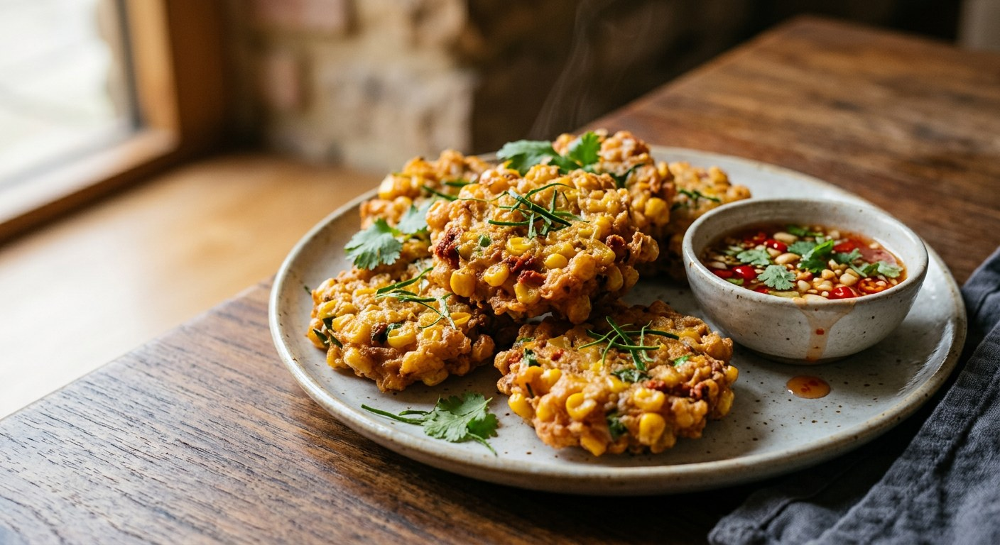

Sweetcorn kernels bound with red curry paste, egg and shredded kaffir lime, spooned into hot oil and fried golden — a sweet, spicy fritter eaten hot with a sweet-sour dipping sauce.

ทอดมัน (tod mun) is the name Thais give to a paste of pounded protein and curry paste, fried — the same word that names the fish cakes. Here the pounded thing is corn: ข้าวโพด (khao pod), whose kernels are bruised or left whole, then bound with น้ำพริกแกงเผ็ด, red curry paste, and an egg, and fried in spoonfuls. The result sits between a fritter and a fish cake — sweet from the corn, fragrant and faintly hot from the paste, with kaffir lime running through it.
It is a snack before it is a starter. Kapook's version is a street-vendor recipe, sold alongside fried taro and tofu from a stall — corn dropped into a sweet batter and fried to order, with a quick sweet-sour chilli sauce built from sugar, vinegar and chilli. Home cooks go the other way: Cookpad's RATTA_Life pounds the corn coarsely in a mortar, as if it were fish, and folds in red curry paste. Aroifin and Thai-thaifood add minced pork to make the fritter a small meal. All of them agree on the eating: hot from the oil, with something sharp and sweet to dip.
The Pantip reviewer's version is the most southern: พริกแกงใต้, southern curry paste, plus a pinch of กะปิใต้, southern shrimp paste, with rice flour added for extra binding so the fritters hold their shape. It is a reminder that "red curry paste" in this recipe is a family, not a single jar — and that the dish stretches from a street snack to a proper southern fry-up.
| Thai | English | Amount |
|---|---|---|
| ข้าวโพดหวาน | Sweetcorn kernels, cut from the cob | 300 g (about 3 cobs) |
| น้ำพริกแกงเผ็ด | Red curry paste | 2 tbsp |
| ไข่ไก่ | Eggs | 2 |
| แป้งทอดกรอบ | Crispy fry flour (or plain flour) | ½ cup |
| ใบมะกรูด | Kaffir lime leaves, very finely shredded | 5 |
| พริกไทยป่น | Ground white pepper | 1 tsp |
| น้ำปลา | Fish sauce | 1 tbsp |
| น้ำตาล | Sugar | 1 tsp |
| น้ำมันพืช | Vegetable oil, for deep-frying | – |
The pork version (Aroifin / Thai-thaifood): add 150–300 g minced pork, a pounded paste of coriander root, garlic and peppercorns, and season with fish sauce and sugar — or, in the Thai-thaifood version, light soy and oyster sauce. The southern version (Pantip): swap the paste for southern curry paste plus a pinch of southern shrimp paste, and bind with cornflour and rice flour — rice flour generously, so the fritters stay in one piece. The street version (Kapook): no curry paste at all — a sweet batter of plain, tapioca and rice flours with baking powder, fried by the ladle and sold with a sweet-sour chilli sauce.
Curry paste — or none. Cookpad, Wongnai and Aroifin build the fritter on red curry paste; the Pantip cook uses southern curry paste with a pinch of southern shrimp paste. Kapook's street version has no paste at all — a plain sweet batter. The name tracks the paste: with it the dish is ทอดมันข้าวโพด; without it, most callers say simply ข้าวโพดทอด, fried corn.
Pork. Aroifin (300 g of minced pork — more meat than corn) and Thai-thaifood (150 g) make it a meat fritter, pounded with garlic, coriander root and peppercorns. Wongnai, Cookpad and Pantip keep it corn-only. The pork version is closer to a classic tod mun — a pounded-meat cake — the corn-only version to a snack.
The flour. Wongnai, Cookpad and Aroifin use tempura-style crispy fry flour; the Pantip cook uses cornflour plus a generous amount of rice flour for binding; Kapook's vendor blend is plain, tapioca and rice flours with baking powder and a little baking soda, which gives the puff. The one shared rule: flour is a binder, never a batter.
Pound or leave whole. Cookpad pounds the kernels coarsely in a mortar before mixing — treating the corn as if it were fish meat. Wongnai, Aroifin and the rest leave the kernels whole. Both work; the pounded version is denser and holds better, the whole-kernel version bursts sweeter when you bite it.
The dip. Ajat (Thai-thaifood, and one of Aroifin's suggestions), chicken dipping sauce (Aroifin), plum sauce (Cookpad), or the street vendor's sweet-sour chilli sauce with crushed peanuts (Kapook). No source serves them plain.
The seasoning. Wongnai, Aroifin and Cookpad season with fish sauce and a little sugar; Thai-thaifood reaches for light soy and oyster sauce instead; the Pantip cook sweetens with palm sugar, which he notes also helps the mixture come together — and is optional if you do not like it sweet.
This recipe is translated from the following Thai-language sources. Where they disagree, we've said so.
1. Cookpad — "ทอดมันข้าวโพดพริกแกงเผ็ด" by RATTA_Life (the recipe used here; the mortar-pounded corn) — cookpad.com
2. Wongnai — "ข้าวโพดทอดพริกแกง" by Nattawut Saenkham (paste beaten into the egg; kaffir lime) — wongnai.com
3. Aroifin — "ทอดมันข้าวโพดหมู ทำง่าย หอมอร่อยกรอบนอกนุ่มใน" (the pork version; the flour warning) — aroifin.com
4. Pantip — "[CR] ทอดมันข้าวโพด (พริกแกงใต้)" topic 33959051 (the southern paste-and-shrimp-paste version) — pantip.com
5. Kapook Cooking — "ข้าวโพดทอด น้ำจิ้มรสเด็ด เมนูสร้างอาชีพ" (the street-vendor batter and its sweet-sour chilli sauce) — cooking.kapook.com
6. Thai-Thaifood — "ทอดมันข้าวโพด (Tod Mun Khao Pod)" (corn-and-pork version served with ajat) — thai-thaifood.com